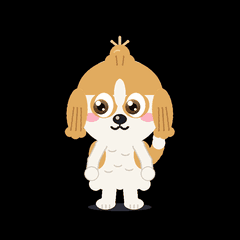

Di “KusiVox” y habla
KusiVox conversa en español, muestra sus emociones en la pantalla y puede manejar tu computadora con Windows.
En iPhone: toca Compartir y luego Agregar a pantalla de inicio.
Primeros pasos
Carga la batería
Conecta un cargador USB-C de 5 V. La luz roja indica que está cargando.
Enciende KusiVox
Usa el interruptor. En la pantalla aparece KusiVox como un cachorro shih tzu animado.
Conéctalo al Wi-Fi
Solo la primera vez. Mira la pestaña Configurar.
Actívalo en xiaozhi.me
Ingresa el código de 6 dígitos que dice KusiVox.
Instala KusiVox en tu PC
Para manejar la computadora con la voz. Mira la pestaña PC.
Conectar al Wi-Fi
Se hace una sola vez, o cuando cambies de red.
Enciende KusiVox
Si no tiene una red guardada, entra en modo de configuración y crea una red llamada KusiVox-XXXX.
Conecta este celular a esa red
Abre los ajustes de Wi-Fi del celular y elige KusiVox-XXXX.
Abre la página de configuración
Toca el botón, elige tu red de casa y escribe su contraseña.
Usa una red de 2,4 GHz
KusiVox no se conecta a redes de 5 GHz. Si tu router tiene dos redes, elige la que no dice “5G”.
Activar en xiaozhi.me
Escucha el código
Al conectarse por primera vez, KusiVox dice y muestra un código de 6 dígitos.
Agrega el dispositivo
En xiaozhi.me entra a tu agente, elige agregar dispositivo e ingresa el código.
Qué le puedes decir
Primero di “KusiVox” y espera a que te escuche.
KusiVox para Windows
Con esta app, KusiVox puede abrir programas, poner música, escribir y más en tu computadora.
Descargar Windows 10 y 11 · 64 bits
Descargar el instalador Versión portable (.zip)Si Windows muestra “Windows protegió su PC”, toca Más información y luego Ejecutar de todas formas.
Copia tu MCP endpoint
En xiaozhi.me: tu agente → Configurar → Extensiones. Empieza con wss://.
Pégalo en KusiVox
Abre la app en la PC, pulsa Pegar y luego Guardar y conectar.
Listo
Cuando diga Conectado, prueba: “KusiVox, abre la calculadora”.
Tu MCP endpoint es privado
Funciona como una contraseña: no lo compartas ni lo publiques. La app lo guarda cifrado con tu cuenta de Windows.
Batería y carga
KusiVox funciona sin cables con una batería 18650 recargable.
Luces del cargador
Roja: cargando. Azul o verde: carga completa. Mientras carga, la pantalla muestra el símbolo de carga.
Cuidados
Usa una batería 18650 original con protección. No cubras KusiVox mientras carga, no lo dejes al sol y no uses baterías golpeadas o hinchadas.
Ayuda
KusiVox no me escucha
Revisa que no esté en modo de configuración Wi-Fi (sin red guardada). Habla claro a unos 30 a 50 cm. También puedes mantener presionado el botón BOOT para hablarle sin decir “KusiVox”.
No se conecta al Wi-Fi
Usa una red de 2,4 GHz y revisa la contraseña. Si cambiaste de casa, vuelve a la pestaña Configurar.
La computadora no obedece
Abre KusiVox en la PC y revisa que diga “Conectado”. Si dice “Reconectando”, revisa el internet de la PC o vuelve a pegar el MCP endpoint.
Dice que no puede abrir programas
Revisa el rol del agente en xiaozhi.me: debe indicar que use las herramientas de la PC. Luego empieza una conversación nueva.
La pantalla se ve gris
Suele ser el cableado: revisa CS (GPIO 41) y SCL (GPIO 21).
La batería dura poco
Baja el brillo de la pantalla y revisa que la batería sea original. Una 18650 de buena calidad tiene entre 2500 y 3500 mAh.